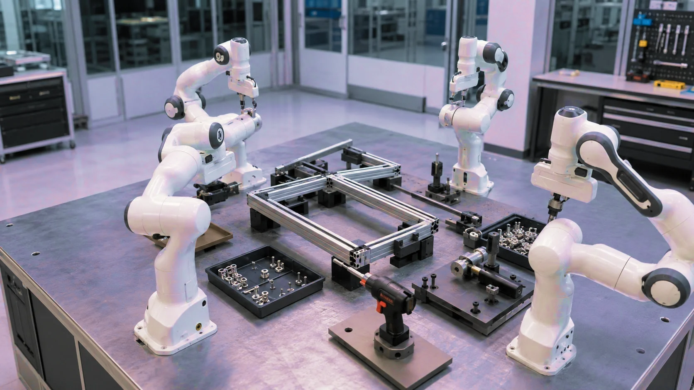
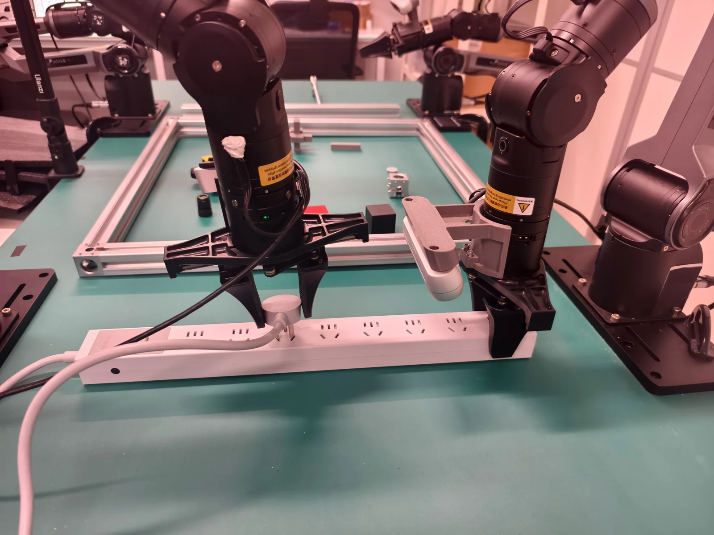
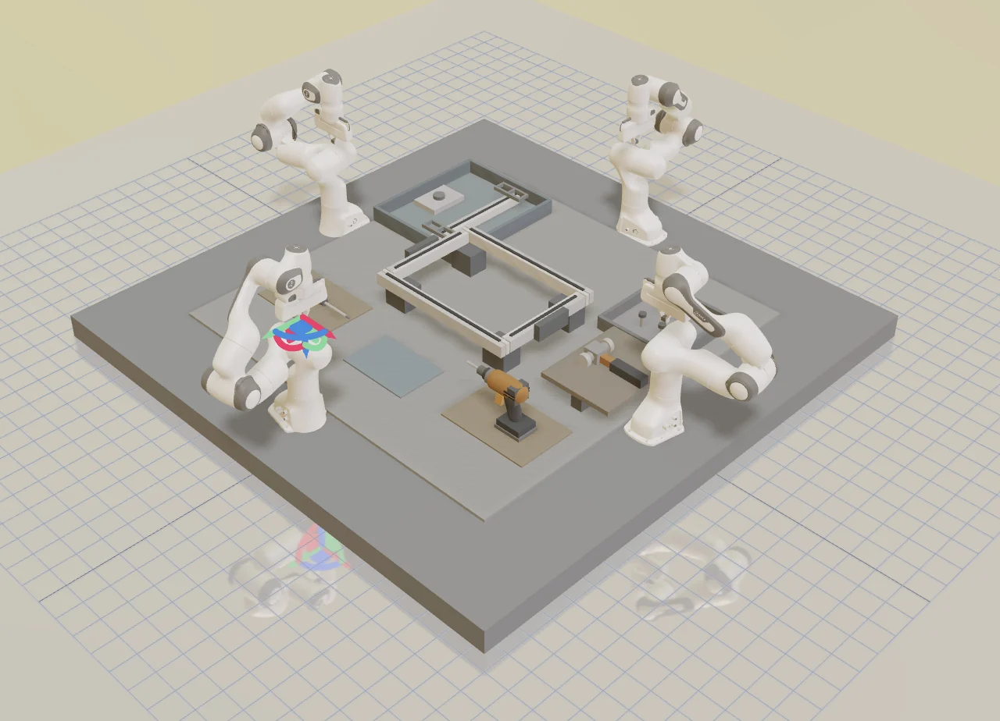
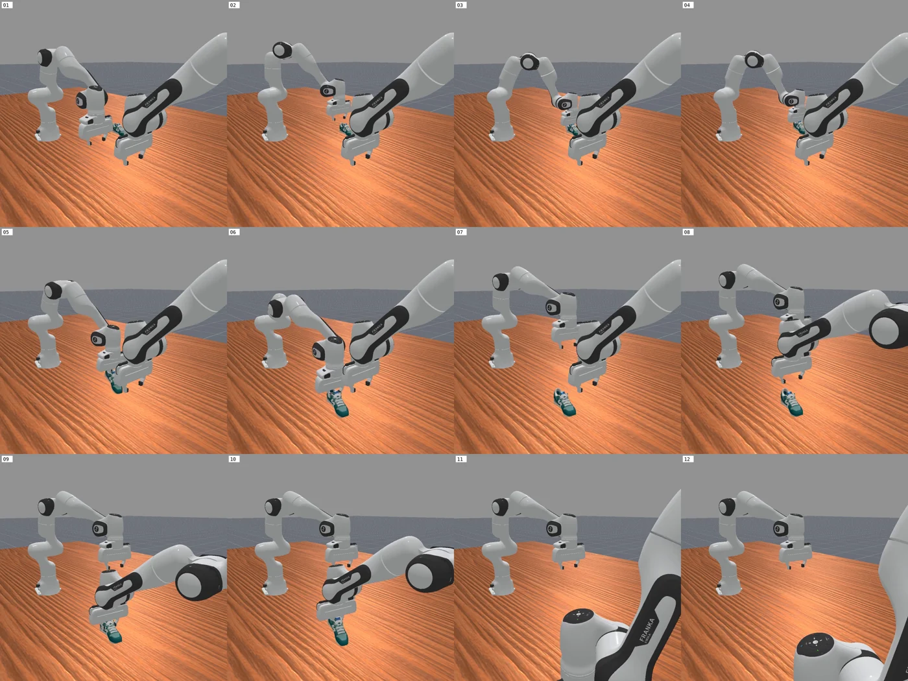
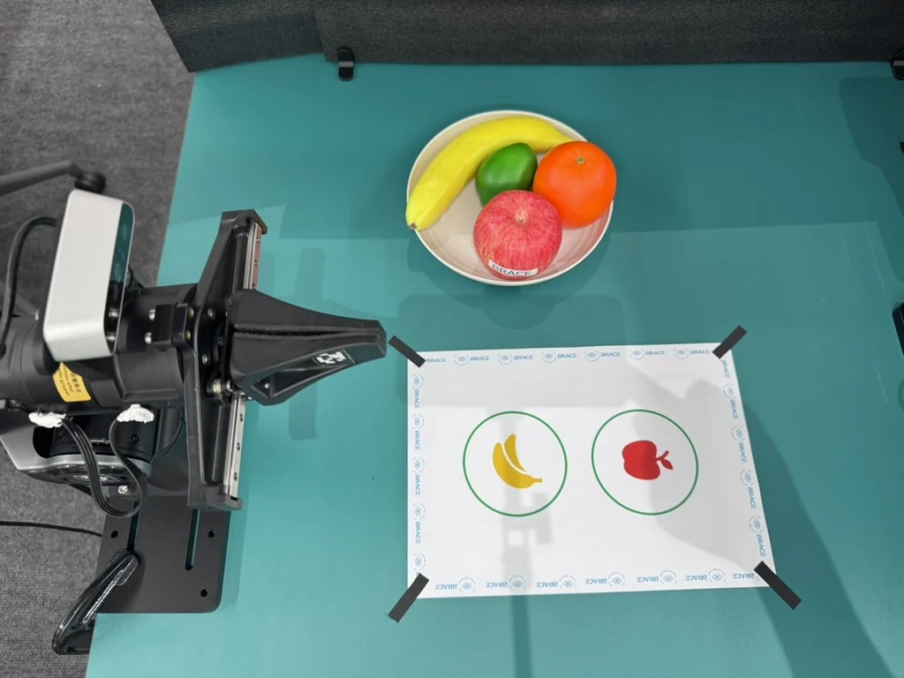

强耦合，也能默契配合
共享对象状态与装配关系，让搬运、支撑与工具作业在同一节奏下协同。
共同持物 · 协作装配
星云协智 · 多机械臂协同智能
以共享世界模型连接感知、决策与行动，让多只机械臂理解同一个世界，协同完成复杂制造任务。
源于前沿研究，走向真实制造
香港科技大学（广州）科技初创项目广州 · 南沙01 — 为复杂协作而生
非标制造的挑战，不止是让一只机械臂动起来。共同持物、对齐、紧固与恢复，需要整个系统拥有一致的理解与行动。
共享对象状态与装配关系，让搬运、支撑与工具作业在同一节奏下协同。
共同持物 · 协作装配面向多品种、小批量生产，通过任务技能与数据复用，减少反复示教的负担。
任务复用 · 柔性换型将错位、滑移与遮挡纳入状态判断，通过主动观察与任务接替恢复协作。
主动观察 · 异常恢复以统一接口连接不同机械臂，让品牌、控制频率和时延差异得到系统化适配。
跨本体适配 · 可扩展架构02 — 协同智能的核心
NCIT 构建位于机器人本体之上的协同智能层，将共享理解、联合预测与协作执行连接成闭环。
SHARED UNDERSTANDING
将多机械臂的观测、对象姿态与装配关系组织为共享状态，为任务分工与协作决策提供共同依据。
03 — 从具体工位开始
以铝型材定制框架组装为首个场景，围绕共同搬运、支撑对齐和工具紧固，构建三臂、四臂协作闭环。

抓取型材，送入共享装配区域。
稳定保持框架，协调端面与角度。
放置连接件，协同完成工具作业。
主动观察状态变化，调整角色与动作。
从可量化的装配任务出发，沉淀可复用的技能、数据与交付能力。
拓展应用方向
04 — 看见协作发生
四臂协作组装铝型材框架。观看模拟环境中的协作流程，了解多臂任务如何衔接。
四臂协作 · 铝型材框架组装 · 模拟环境
下载演示视频从仿真训练、通信方法到真机数据采集，连接算法探索与系统实践。

多臂仿真环境中的状态建模、联合预测与协作方案验证。

围绕协作任务，开展通信方法与视觉—语言—动作模型的仿真训练。

双臂家居协作任务的真机与仿真数据采集，以及模型微调实践。
05 — 从技术到产品
以 24 个月研发路线连接最小真机闭环、模型迭代、跨本体适配与客户工位验证。
01—03 个月
完成搬运、保持、对齐与连接的限定真机流程，建立统一数据接口。
04—09 个月
建立对象与装配关系状态、异常日志和联合动作预测，完成基线比较。
10—15 个月
扩展四臂共同持物、支撑与工具作业，适配第二类机械臂接口。
16—24 个月
推进边缘部署、连续运行验证，以及第二工位复制与客户验收。
06 — 跨越研究与产业
汇聚多智能体算法、技术产品化与机器人系统工程经验，让科研能力与交付能力在同一个团队相遇。
项目负责人 · 首席科学家
香港科技大学（广州）物联网与机器人学域联聘助理教授，多伦多大学博士。负责多智能体世界模型研发与科研组织。
多智能体算法 / 校企研发拟任 CEO · 技术产品化
博士生创业者、ayaMaa 联合创始人，曾负责品牌出海业务。推进技术产品化、客户需求定义与公司运营。
产品化 / 客户与经营工程与交付负责人
锐动新创 CEO，曾任乐聚机器人夸父系列核心工程师，具有人形与重载四足机器人研发经验。负责硬件、系统工程与现场交付。
机器人系统 / 工程交付07 — 让能力进入生产
面向制造企业、机械臂厂商与系统集成商，提供协同智能层，与合作伙伴共同完成从场景定义到部署复制的每一步。
梳理物料、工序与协作需求，明确任务边界、成功率和验收标准，验证最小闭环。
围绕真实工位完成算法适配、模型训练、回归验证与现场验收。
通过年度授权、版本升级、任务包与 OEM 合作，复用数据和技能，拓展更多工位。
LET’S BUILD TOGETHER
如果你的生产现场，也有一个需要多臂共同完成的挑战，欢迎与我们交流。